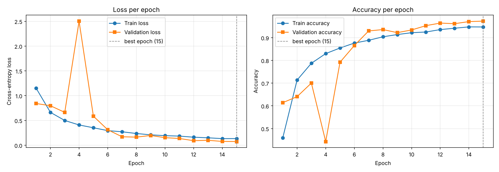

<section id="results" style="background:#F7F5F0;color:#16233A;font-family:'Vazirmatn', Tahoma, sans-serif;text-align:right;padding:128px 128px 160px;display:flex;flex-direction:column;gap:28px">
<p style="font-size:24px;font-weight:700;color:#0E7C7B">&#8235;بخش چهارم · ارزیابی</p>
<h2 style="font-size:64px;font-weight:700;line-height:1.3">&#8235;منحنی‌های آموزش و نتایج Test</h2>

<div style="display:flex;flex-direction:row-reverse;gap:32px;align-items:center">

<table style="flex:1;font-size:26px;color:#16233A;background:#FFFFFF;border-radius:12px">
<tr><th style="width:22%">F1</th><th style="width:22%">Recall</th><th style="width:22%">Precision</th><th style="width:34%;text-align:left">Class</th></tr>
<tr><td>0.961</td><td>0.954</td><td>0.967</td><td>Eosinophil</td></tr>
<tr><td>0.999</td><td>1.000</td><td>0.998</td><td>Lymphocyte</td></tr>
<tr><td>0.999</td><td>0.998</td><td>1.000</td><td>Monocyte</td></tr>
<tr><td>0.962</td><td>0.968</td><td>0.955</td><td>Neutrophil</td></tr>
</table>
</div>
<p style="position:absolute;left:128px;bottom:64px;font-size:24px;color:#8A8F98">BCCD · CNN</p>
<aside>نمودار بالا loss و دقت را برای آموزش و اعتبارسنجی نشان می‌دهد. loss آموزش یکنواخت پایین می‌آید. loss اعتبارسنجی در اپوک‌های اول نوسان دارد و در اپوک چهارم یک جهش بزرگ تا ۲٫۵ دیده می‌شود؛ این مربوط به زمانی است که نرخ یادگیری هنوز بزرگ است و آمار BatchNorm هنوز جا نیفتاده. از اپوک ششم به بعد با کم شدن نرخ یادگیری، منحنی‌ها آرام می‌شوند. دقت اعتبارسنجی در پایان ۹۷٫۳ درصد است و حتی از دقت آموزش بالاتر است، چون روی داده‌ی آموزش augmentation و Dropout فعال است؛ پس بیش‌برازشی دیده نمی‌شود. بهترین مدل روی داده‌ی تست به دقت ۹۸ درصد و Macro F1 برابر ۰٫۹۸ می‌رسد. لنفوسیت و مونوسیت تقریباً بدون خطا تشخیص داده می‌شوند. تقریباً همه‌ی خطاها بین ائوزینوفیل و نوتروفیل است؛ هر دو گرانولوسیت‌اند و هسته‌ی چندلوبی دارند و تفاوتشان بیشتر در رنگ دانه‌های سیتوپلاسم است که در ۶۴ در ۶۴ به‌سختی دیده می‌شود.</aside>
</section>
